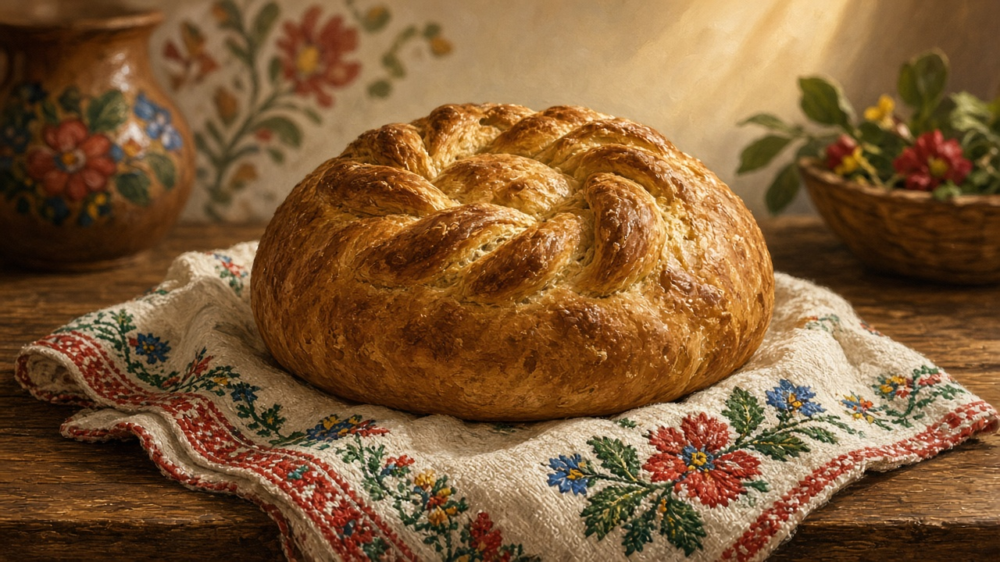

Bread
Pâine. Not a bakery catalog. The loaf that still means the house is fed, whether it came from the cuptor or the shop.

The loaf on the table
A round loaf, cut thick. Salt on the same cloth. That is still the picture a lot of people mean by masă, the table, even when the rest of the meal is soup, cheese, or leftover stew. Guests are met with pâine și sare — bread and salt — a welcome older than any printed menu. You break, you salt, you sit. The word itself is Latin that stayed: pâine from panis, the same bone as the lesson on the Latin that stayed. Mămăligă sits beside the loaf in many houses and is not a lesser claim; it is a different one. Cornmeal is weekday filling. Bread is the sign that someone kept the room. The stove that baked it, or that still warms the wall while the shop loaf is sliced, is mapped on the house.
Wheat, mill, oven
The loaf starts in the field. Seceriș, the cutting of the grain, is the hurry on the harvest page. What the mill does with that grain is quieter: a moară on a creek, then a village mill you paid in a share of the flour, then bags from a town silo. A small river that turned a wheel is the same water habit as rivers — the creek with no fame that still did a job. The oven was the cuptor in the yard, or the older sobă that took a few loaves after the fire had been pushed to one side. Neighbors shared a hot oven when wood was dear. Combines and factory flour did not erase the words. People still say “am scos pâinea” the way they say the house is all right.
Days that ask for bread
Some days the loaf is not only food. Colaci are ritual breads — twisted or round — for a wedding, a christening, a funeral, or a basket taken to church. Colivă is different: boiled wheat, sweetened, for memorial days, not a loaf. Keep both pictures short and respectful; the calendar that holds them is on the table in the year. After Liturgy there may be a blessing of bread, or a piece of anafură taken home. Belief and the chalice sit on Orthodoxy. This page is only the grain that still walks into those rooms. Christmas and Easter tables still want a loaf even when the rest of the feast has become shop food. A name day in the yard still puts bread down first.
Shop loaf and what stayed
Most weeks now the bread is bought. A town piață still sets a village oven loaf next to the sliced industrial one; that square is on the market. In winter someone still goes out for bread when they will not go out for anything else — the measured trip on winter. Apartment kitchens keep a bag on the counter and an embroidered cloth in a drawer. The round loaf is rarer. The claim is not. You do not need a list of regional shapes. You need the habit of asking whether this table still cuts a loaf, or only opens a bag — and whether a guest is still met with pâine și sare, or with a store cake that forgot the salt.